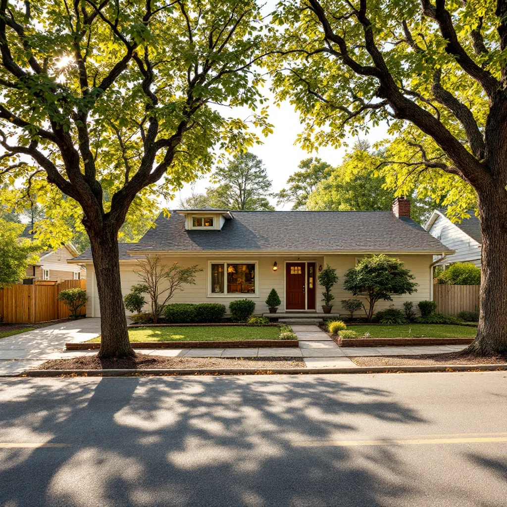

Pressure Washing in Bearden — Fresh Exterior, Same Day
Serving Bearden, West Knoxville & surrounding neighborhoods · We call back within 1 hour
Green Siding, Grimy Driveway, Dingy Deck?
Bearden's established neighborhoods have some of the most mature tree canopy in Knoxville — and with that shade comes faster algae and mildew growth than newer, more open developments. The ranch homes and split-levels common here have north-facing walls that stay damp well into the day, creating ideal conditions for green and black streaks to establish and spread season after season.
If your home's exterior has been looking worse every spring, you're not imagining it. Algae, mildew, and general grime are cumulative — a little each season until the house looks like it's been neglected for years, even when it hasn't been. The fix is faster and cheaper than most homeowners expect. A professional pressure wash typically takes 2–4 hours. The before-and-after is usually dramatic enough that neighbors notice.

What That Buildup Is Actually Doing
It's not just an appearance problem:
- Algae on siding and wood is acidic. It holds moisture and accelerates surface breakdown, shortening the life of paint and contributing to wood rot on trim and lap siding.
- Green concrete and pavers are slipping hazards. Wet algae on shaded driveways and pool decks creates a genuinely dangerous surface, especially for kids and older family members.
- Pre-paint prep requires a clean surface. No reputable painter starts on dirty siding. The wash is a required step before any exterior paint job — not optional.
- Curb appeal before a sale matters. A clean exterior reads as a maintained home. Grime and algae raise questions in buyers' minds before they ever step inside.
The biological growth that builds up in East Tennessee's climate doesn't stop on its own — it just gets thicker every season you wait.
What We Do and How Long It Takes
1Assess. We walk the property and note surface types — vinyl, wood, composite, concrete, brick. We quote on the spot with a written fixed price.
2Pre-treat. Algae and mildew respond to biodegradable detergent application before water hits the surface. This does the biological work so we don't need high pressure that would damage the surface.
3Wash. Calibrated technique by surface type: higher pressure on concrete with rotating surface cleaner, soft wash on siding and wood, correct nozzle angle to prevent water infiltration behind panels.
4Walk it with you. We inspect before leaving. You get the result you expected — or we make it right.
Most full-property jobs are done in 2–4 hours.
What Homeowners Say About the Results
"The north side of our house was completely green. They soft-washed the whole exterior and it looks like a different house. No damage to the brick or paint — just clean."
"Called in the morning, had a quote by noon and were scheduled for the following week. Price was fair and they matched it exactly. My driveway looks ten years younger."
What Pressure Washing Costs Here
Straightforward pricing — we quote by job, not by hour:
| Service | Price Range |
|---|---|
| House exterior washing | $250–$550 |
| Driveway & walkways | $100–$225 |
| Deck or patio | $150–$375 |
| Roof soft wash | $300–$600 |
| Full property package | $400–$850 |
You know the price before we start. The estimate is free.
Quick Answers Before You Call
Will pressure washing damage my siding or deck?
Only if you use the wrong technique — which is what we don't do. We use soft wash methods on all delicate surfaces (siding, wood, roofs) and calibrated pressure on concrete and brick. Every surface gets the appropriate method, not the fastest one.
Do I need to be home?
No. Just leave us access to an outdoor water spigot. Most customers head to work and come home to a clean property. We'll note anything worth flagging before we leave.
How often should I have this done?
Bearden's heavy tree canopy keeps surfaces damp and shaded, which accelerates algae growth. Most properties here benefit from annual washing — shaded north-facing walls may need attention every 8–10 months.
Do you work in Bearden?
Yes — we serve all of Bearden and surrounding west Knoxville neighborhoods including Sequoyah Hills, West Hills, and nearby areas. Call (865) 378-8377.
Book Before the Calendar Fills Up
Our calendar fills fast. If you're getting ready to sell, paint, or just want the house looking its best, get on the calendar now. Call (865) 378-8377 and we answer or call back within 1 hour.